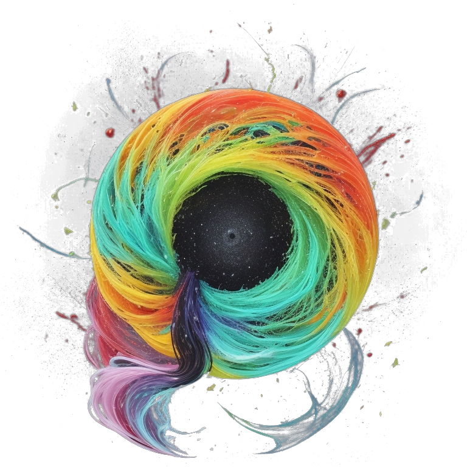
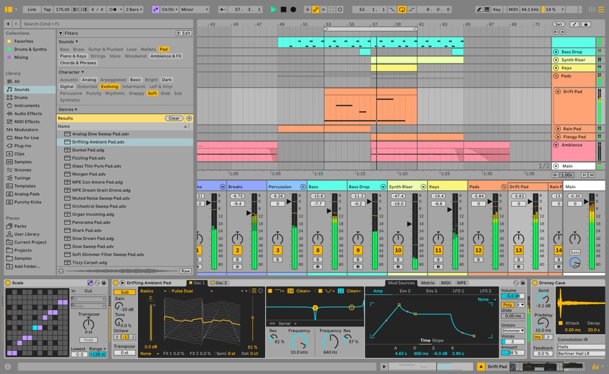
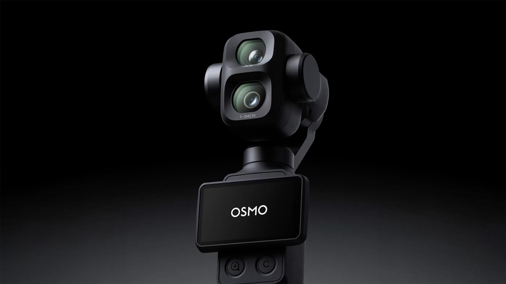
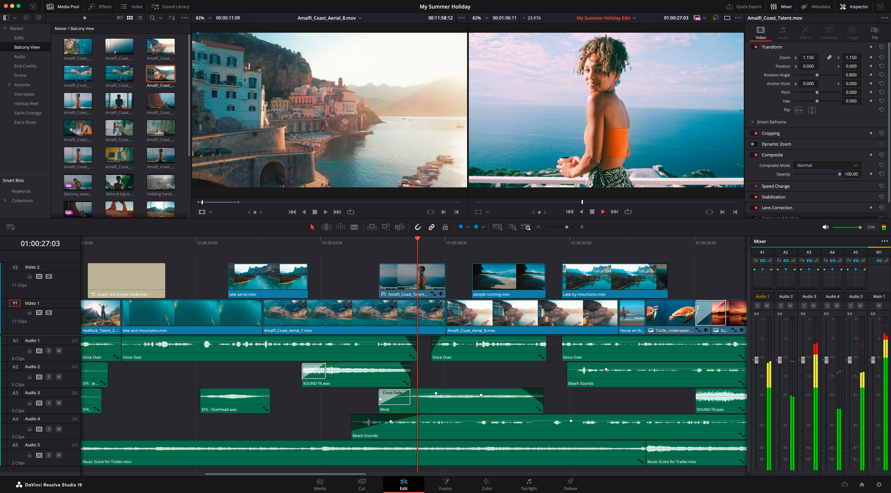

Galéria
Válogatás filmzenékből, trailerekből és vizuális projektekből.

A Piper Media a hatásos történetmesélésről szól — hangban és képben egyaránt. Nemcsak zenét szerzek vagy videót vágok, hanem a kettőt teljesen egymásra hangolva hozom létre a végleges élményt.
A koncepciótól a végleges stúdió-masterig minden munkafolyamat egy kézben fut.

Több mint 3 évtizede foglalkozom zenével, zeneszerzéssel. Kezdetben pop-rock zenekarokban billentyűztem az utóbbi években főként filmzenei területen fejlesztettem magam. A legnagyobb elismerés számomra, hogy az Amazon Frontlines nemzetközi filmzeneszerző versenyén több mint 500 nevező közül bekerültem a fináléba a legjobb 10 közé. Bár mostanában én is tartom a lépést a korral, többnyire saját ötleteim fejlesztéséhez, vagy ének sávok generálására használok AI-t.

A beépített 3 tengelyes gimbalnak és az aktív témakövetésnek köszönhetően olyan dinamikus kameramozgások valósíthatók meg, amelyek hagyományos felszereléssel csak nehezen vagy egyáltalán nem. A 4K felbontás és a 10-bites LOG színprofil garantálják, hogy a felvételek minden fényviszony mellett megállják a helyüket — nem véletlenül vált ez az apró eszköz a profi videósok kedvencévé.

Teljes körű utómunka DaVinci Resolve rendszerben. A képi ritmust a zene lüktetéséhez igazítom, a színeket pedig a projekt hangulatához hangolom.
Válogatás filmzenékből, trailerekből és vizuális projektekből.
Dolgozzunk együtt a következő projekteden!
Kérdésed van, vagy árajánlatot szeretnél kérni? Írj bizalommal: